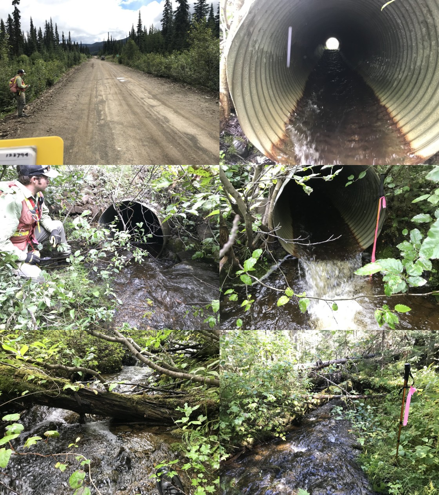

Appendix - 123794 - Tributary to Blunt Creek
Site Location
PSCIS crossing 123794 is located on tributary to Blunt Creek at km 19.3 of the Blunt Creek FSR. The site is accessed via Moricetown Road through Witset approximately 40km north of Smithers. The culvert is located approximately 670m upstream from the confluence with a major tributary to Blunt Creek. Blunt Creek flows east into Harold Price Creek which in turn flows into the Suskwa River. The Suskwa River enters the Bulkley River near Hazleton BC. Blunt Creek FSR is the responsibility of the FLNR - Skeena Stikine District.
Background
At crossing 123794, tributary to Blunt Creek is a second order stream. Watershed area upstream of the crossing is estimated at 0.9km2 ranging from a maximum elevation of 1260m to 1070m at PSCIS crossing 123794. Upstream of the Blunt Creek FSR, dolly varden have been previously recorded as present (MoE 2020a). MoE (2020a) also indicates that salmon (unidentified species) have been recorded in an adjacent tributary with cutthrout recorded nearby within multiple streams connecting to the greater stream network just downstream of the subject tributary. PSCIS crossing 123785 has been ranked as a barrier and is located on the tributary that the subject stream drains into. It is located approximately 250m north-east on a spur road (R09533) accessed at km 18.3 of the Blunt Creek FSR.
PSCIS stream crossing 123794 was ranked as a high priority for follow up by Irvine (2018) because there was salmon noted nearby, due to the presence of a small lake upstream, and because PSCIS data indicated a larger channel containing habitat rated as high value. Although on a smaller stream, the crossing’s location on a forest service road was considered advantageous as these sites are often eligible for funding through forestry supported funds such as the Land Based Investment Fund if restoration of fish passage is warranted. A map of the watershed is provided in map attachment 093M.103.
Stream Characteristics at Crossing
At the time of the survey, the culvert under Blunt Creek FSR was un-embedded, non-backwatered and ranked as a barrier to upstream fish passage acoording to the provincial protocol (MoE 2011). The pipe was 0.9m in diameter with a length of 13m, a culvert slope of 5%, a stream width ratio of 1.9 and an outlet drop of 0.25m (Table 5.12). Water temperature was 9\(^\circ\)C, pH was 7.7 and conductivity was 73uS/cm.
Stream Characteristics Downstream
The stream was surveyed downstream from the culvert for 250m (Figures 5.16 - 5.17). Total cover amount was rated as moderate with undercut banks dominant. Cover was also present as small woody debris, large woody debris, and overhanging vegetation (Table 5.13). The average channel width was 1.7m, the average wetted width was 1.8m and the average gradient was 5%. The dominant substrate was gravels with cobbles subdominant. Within the area surveyed, the stream had good flow volume and frequent patches of gravel suitable for spawning for coho and resident salmonids. The habitat was rated as moderate value.
Stream Characteristics Upstream
The stream was surveyed immediately upstream from 123794 for approximately 525m (Figures 5.18 - 5.19). Within the area surveyed, total cover amount was rated as moderate with undercut banks dominant. Cover was also present as small woody debris, large woody debris, deep pools, and overhanging vegetation (Table 5.13). The average channel width was 1.9m, the average wetted width was 1.6m and the average gradient was 9.6%. The dominant substrate was gravels with cobbles subdominant. The channel was noted as having good complexity and abundant gravels suitably sized for both coho and resident salmonid spawning. Some small woody debris/large woody debris steps (30-50cm in height) were present intermittently starting approximately 400m above the culvert. A fish (~120mm) was observed 500m upstream of the culvert. A 4m high falls was noted at the top end of the site and represents an impassable barrier to upstream migration. Habitat value was rated as moderate for salmonid spawning and rearing.
Structure Remediation and Cost Estimate
Replacement of PSCIS crossing 123794 with a embedded culvert (streambed simulation - 3m span) is recommended in the long term. The cost of the work is estimated at $25,000 for a cost benefit of 21 linear m/$1000 and 39.9m2/$1000.
Conclusion
There is 0.5km of habitat upstream of crossing 123794 with habitat value rated as moderate value for salmonid rearing and spawning. Blunt Creek FSR is the responsibility of FLNR - Skeena Stikine District. The crossing was ranked as a moderate priority for proceeding to design for replacement. Future fish sampling is recommended upstream and downstream of the crossing to scope for anadromous species and evaluate potential impacts of the culvert on fish densities. Although the upstream channel appears to split into three channels just upstream of the crossing, it is also recommended that PSCIS crossing 123785 (located on the spur road R09533 accessed from km 18.3 of the Blunt Creek FSR) be scoped as a habitat confirmation candidate at the same time that other fish passage assessment work is conducted in the area.
| Location and Stream Data |
|
Crossing Characteristics | – |
|---|---|---|---|
| Date | 2020-08-24 | Crossing Sub Type | Round Culvert |
| PSCIS ID | 123794 | Diameter (m) | 0.9 |
| External ID | – | Length (m) | 13 |
| Crew | AI, KP | Embedded | No |
| UTM Zone | 9 | Depth Embedded (m) | – |
| Easting | 616100 | Resemble Channel | No |
| Northing | 6106763 | Backwatered | No |
| Stream | Tributary to Blunt Creek | Percent Backwatered | – |
| Road | Blunt Creek FSR | Fill Depth (m) | 0.75 |
| Road Tenure | FLNR Nadina 9111 | Outlet Drop (m) | 0.25 |
| Channel Width (m) | 1.73 | Outlet Pool Depth (m) | 0.43 |
| Stream Slope (%) | 5 | Inlet Drop | No |
| Beaver Activity | No | Slope (%) | 5 |
| Habitat Value | Medium | Valley Fill | Deep Fill |
| Final score | 31 | Barrier Result | Barrier |
| Fix type | Replace Structure with Streambed Simulation CBS | Fix Span / Diameter | 3 |
| Photos: From top left clockwise: Road/Site Card, Barrel, Outlet, Downstream, Upstream, Inlet. | |||
| Comments: Smaller stream with good flow. Salmon points noted in adjacent stream. Recommend sampling upstream and downstream and habitat assessment of stream at associated PSCIS crossing 123785. |
| Site | Location | Length Surveyed (m) | Channel Width (m) | Wetted Width (m) | Pool Depth (m) | Gradient (%) | Total Cover | Habitat Value |
|---|---|---|---|---|---|---|---|---|
| 123794 | Downstream | 250 | 1.7 | 1.8 | 0.3 | 5 | moderate | moderate |
| 123794 | Upstream | 525 | 1.9 | 1.6 | 0.2 | 9.6 | moderate | moderate |

Figure 5.16: Habitat downstream of PSCIS crossing 123794.
Figure 5.17: Habitat downstream of crossing 123794.
Figure 5.18: Habitat upstream of PSCIS crossing 123794.
Figure 5.19: Cascade upstream of PSCIS crossing 123794.